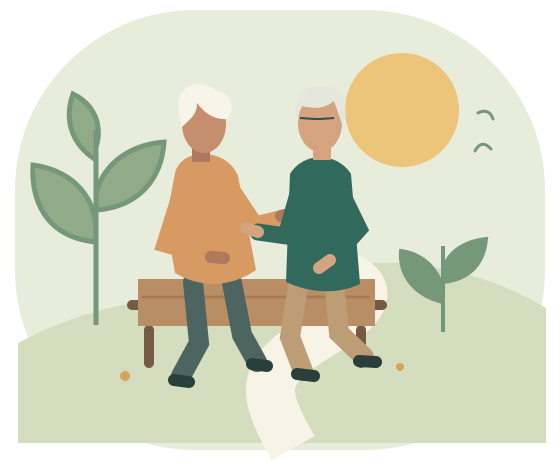

CADA FASE, NOVAS POSSIBILIDADES
Bem-estar
no seu ritmo.
Informação para viver a maturidade com mais autonomia. Explore, aprenda e descubra pequenas formas de cuidar de você.
Explorar a bibliotecaSem cadastro. Com respeito ao seu tempo.

Conhecimento para o dia a dia. Este material é educativo. Não realiza avaliação de saúde nem substitui acompanhamento profissional.
Entenda os limitesAtividades educativas. Consulte a agenda e faça sua inscrição pelo aplicativo Android.
Baixar aplicativoSUA BIBLIOTECA DE BEM-ESTAR
Por onde vamos começar?
Escolha um assunto. A leitura é no seu tempo.
Nenhum conteúdo por aqui.
Tente outro assunto ou uma palavra diferente.
Ative o JavaScript para usar a biblioteca interativa. Você também pode consultar as fontes de leitura, os limites de uso e as informações de privacidade.
PEQUENAS DESCOBERTAS
Cada leitura conta.
Guarde uma ideia e leve suas dúvidas para uma conversa com um profissional de saúde.
Favoritos e leituras ficam apenas nesta página e são apagados ao recarregar ou sair.
UM TEMPO PARA VOCÊ
Que tal uma pausa na leitura?
Escolha um tempo para descansar da tela.
O tempo é livre; não orienta exercícios ou respiração.
TECNOLOGIA COM PROPÓSITO
Mais clareza.
Mais autonomia.
O VitaSênior nasceu como um projeto universitário de impacto social. Esta versão reúne informação sobre bem-estar em uma experiência simples, acolhedora e acessível.
Você escolhe o que ler. Não pedimos diagnósticos, não avaliamos sua capacidade física e não montamos tratamentos.
Conheça nossas referências